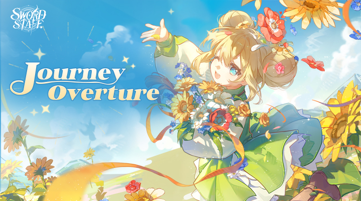

Trang chủ Đại Bách Khoa / Thư Viện Chi Tiết (Nhập Môn & Kinh Tế) / Cẩm Nang Nhập Môn 7 Ngày Đầu, Kinh Tế Dawnium & 17 Giftcode
Cẩm Nang Nhập Môn 7 Ngày Đầu, Kinh Tế Dawnium & 17 Giftcode

Mục Lục Bài Chi Tiết
1. Rủi Ro Khóa Server, Mốc 100% Đảo Khởi Nguyên & Quyết Định Reroll
- Mốc mở Hòm Thư: Phải chơi xong 100% hướng dẫn Đảo Khởi Nguyên (Originisle) mới mở khóa biểu tượng Thư nhận thưởng Giftcode.
- Cảnh báo khóa máy chủ: Server mới đầy rất nhanh và lập tức đóng tạo nhân vật mới — nếu đi cùng bạn bè hoặc Bang Hội, tuyệt đối vào giữ chỗ ngay, KHÔNG Reroll! Game phát hàng trăm lượt quay tuần đầu và đạt mốc
200 lượttặng sẵn Rương Tự Chọn Kỹ Năng Cam Bậc 1. - Đích ngắm nếu Reroll đơn (15–20 phút/vòng): Hệ Trượng nhắm Thuật Rồng Nước (Water Assault) + Khiên Áp Suất Gió (Gale Shield); Hệ Kiếm nhắm Đòn Đập Mạnh (Heavy Impact) + Lưới Xoáy Chém (Whirlwind Slash).
2. Tháp Ưu Tiên Chi Tiêu Dawnium, Rolla & Thương Hội Commercium
- Tháp Dawnium F2P: (1) Mua đủ
2 lượt Phó Bản Trang Bị/ngày(100+150Dawnium) → (2) Giữ cứng3,000 Dawniumphòng thân săn đồ giảm giá → (3) Phần dư dồn vào Cổ Vật (chiếm 35%+ Lực Chiến vĩnh viễn không bao giờ reset). - Buôn Chợ 1 Chiều & Thương Hội Commercium (Lv.40): Trong
48h đầu mở vùng mới, dốc Thể Lực gom nguyên liệu nấu ăn (mọng, khoai, sữa lạc đà, tôm hùm) treo Trading House hốt Dawnium; lên phi thuyền rìa tây Nhà mở Auction House dùng Luminium đấu giá đồ hiếm. - Gian Hàng (Vendor Booth • Lv.20) & Rolla Shop: Ưu tiên mua sạch Gỗ, Đá, Cuộn Nhiệm Vụ; kiểm tra mục Kho (Vault) mỗi ngày săn Stellaties, Iron Hammer, Gold Pickaxe, Worn Knuckles giảm giá.
3. Căn Cứ (Xe Đẩy 36h / Giường Ngủ), Bang Hội & Cõi Vật Chất
- Xe Đẩy (Cart): Tích trữ ngoại tuyến tối đa 36 giờ. Nâng đều mọi loại tài nguyên lên Lv.10 trước rồi dồn Gỗ + Đá.
- Giường Ngủ (Bed EXP): Mỗi ngày có 1 lượt tăng tốc free; dùng Temporal Crystal ăn 2h cả Giường lẫn Xe Đẩy. Nhớ bật đủ Tượng Nữ Thần trước khi bấm tăng tốc và tắt thu hoạch nhanh Giường 36 giờ trước giờ Reset Mùa!
- Bang Hội (Lv.15) & Cõi Vật Chất: Cống hiến Bang
3 lần/ngày(tối đa 70 Dawnium). Với Material Realm, chỉ bấm xả lượt khi vừa đột phá Hạng (Rank) mới để ăn sản lượng cao hơn.
4. Danh Sách 17 Giftcode & Đường Dẫn Nhập Mã (Launch FAQ)
Vào game bấm: Home > Menu Chính (góc dưới phải) > Trung Tâm Người Dùng (User Center) > Gift Code. Nhận quà tại Hòm Thư Chim Cú.
| Giftcode | Phần Thưởng Chính | Ghi Chú |
|---|---|---|
SXSLAUNCH / SXS519 | Dawnium, Vé Triệu Hồi & Tài nguyên ra mắt | Code khai mở bản Global |
SWORDSXS / STAFFSXS | Vé Triệu Hồi Kỹ Năng & Đá Cường Hóa | Dành cho mọi server |
KANSTEIN777 / KANSTEIN2026 | Rolla, Quà Thiện Cảm & Stellaties | Hỗ trợ giai đoạn Verdantglade |
OVERTURE519 / PHANTOMPURR | Thẻ Tài Nguyên & Vé Vòng Quay Sự Kiện | Chuỗi Khúc Dạo Đầu Hành Trình |
VIP666 / VIP777 / VIP888 | Dawnium, Gỗ/Đá, Tinh Thể Triệu Hồi Pet | Bộ mã phúc lợi tân thủ chuẩn |